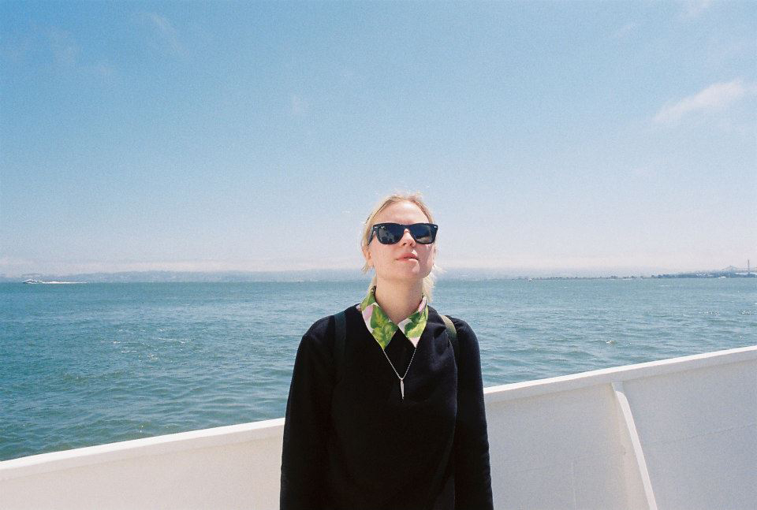

Jessica Viscius is a graphic design and front-end developer interested in cultural and fashion work.
Jessica was born in Chicago, IL. Where she was formally trained as a graphic designer before moving to NYC. She's taken advanced Front-End Web Development and UX courses at The Starter League and General Assembly.
For freelance opportunities contact:
jessicaviscius@gmail.com
Follow:
Twitter
Instagram
Portrait by
Alexa Viscius
